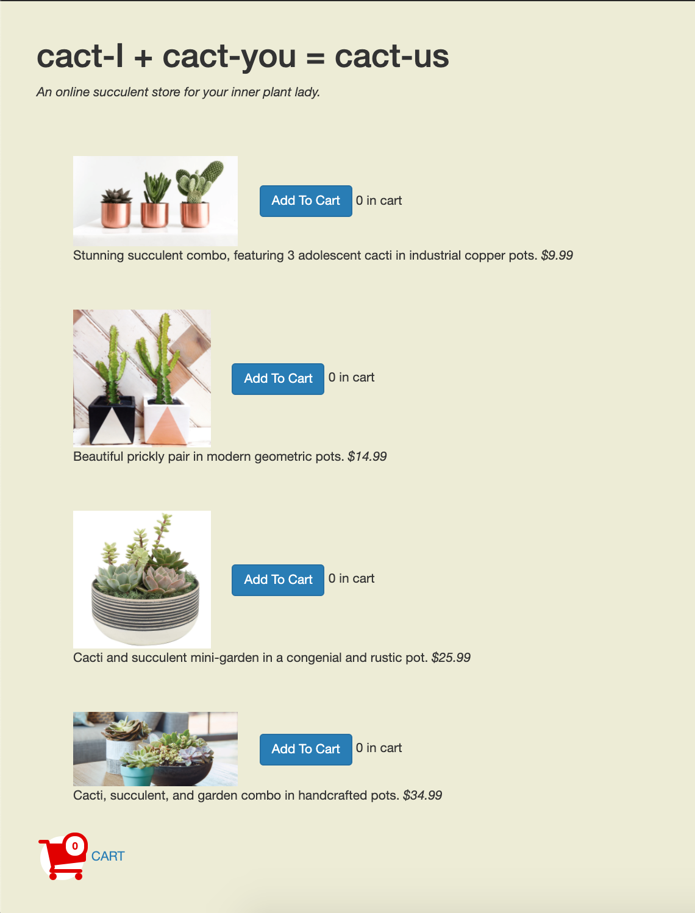
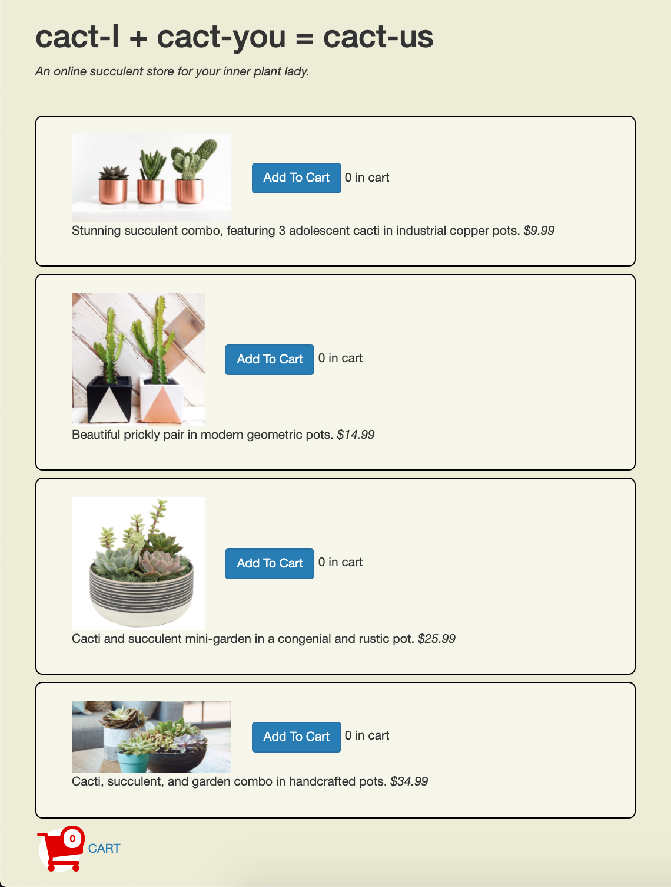

What differentiates a designer from an artist? Many people have written at length about this dilemma, but one crucial difference is their goals: design is unique in that it often has a specific objective, and therefore a crucial part of design is evaluation.
How do you know if a design is successful, or if you've reached your goal? One way to evaluate a design is by comparing it to another. Comparative design evaluation is called an A/B Test, and it represents a major way in which designs and layouts are evaluated! An A/B test is actually part of the method of an experiment – it's the way we understand if a hypothesis – namely, a design decision – has any significant effect on user behavior.
My Experiment
 Version A
Version B
I did an A/B test on a mock cactus e-commerce site. There are a few crucial actions that users may take while navigating the site: clicking on one of four buttons to add a specific cactus set to their cart, navigating to their cart, or returning to the main commerce page.
Question
How does differentiation of discrete products affect user behavior? I define differentiation as the use of borders and backgrounds to set one product apart from another.
Hypothesis
Users will display less time to completion and a lower return rate upon introduction of rounded borders and semi-transparent white backgrounds. Namely, the design with borders and backgrounds will perform better than the design without borders or backgrounds.
Summary of process
Using some complex routing, users were shown either the A or B version and instructed to fill their carts with $150 worth of cacti.
Results

Reflection
This was an interesting way to evaluate a website – even if the results are inconclusive!